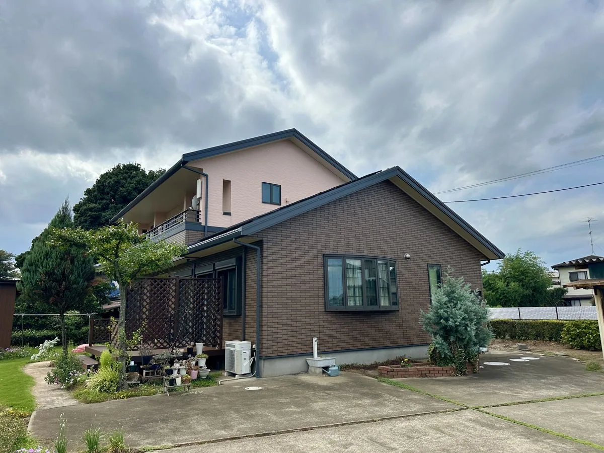
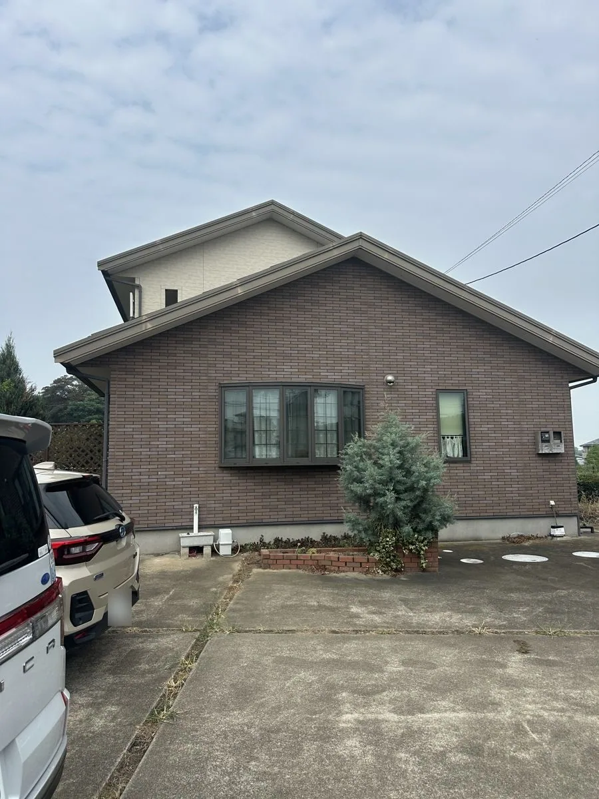
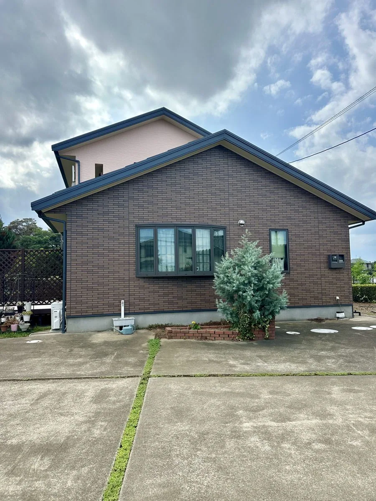
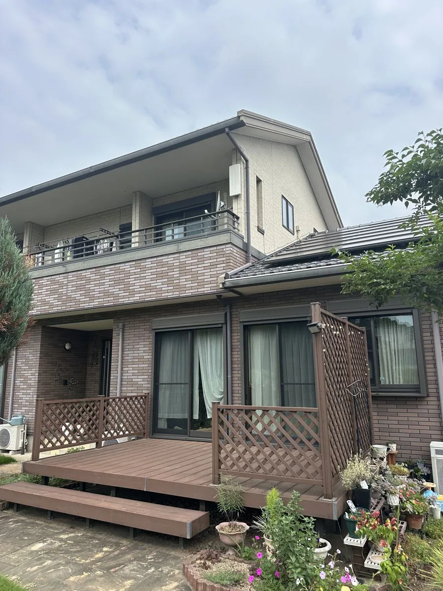
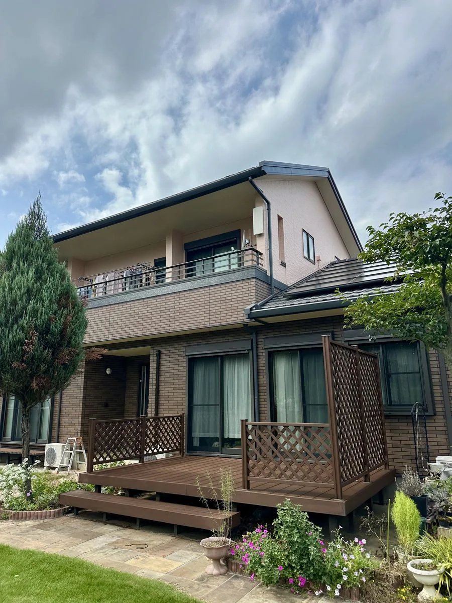
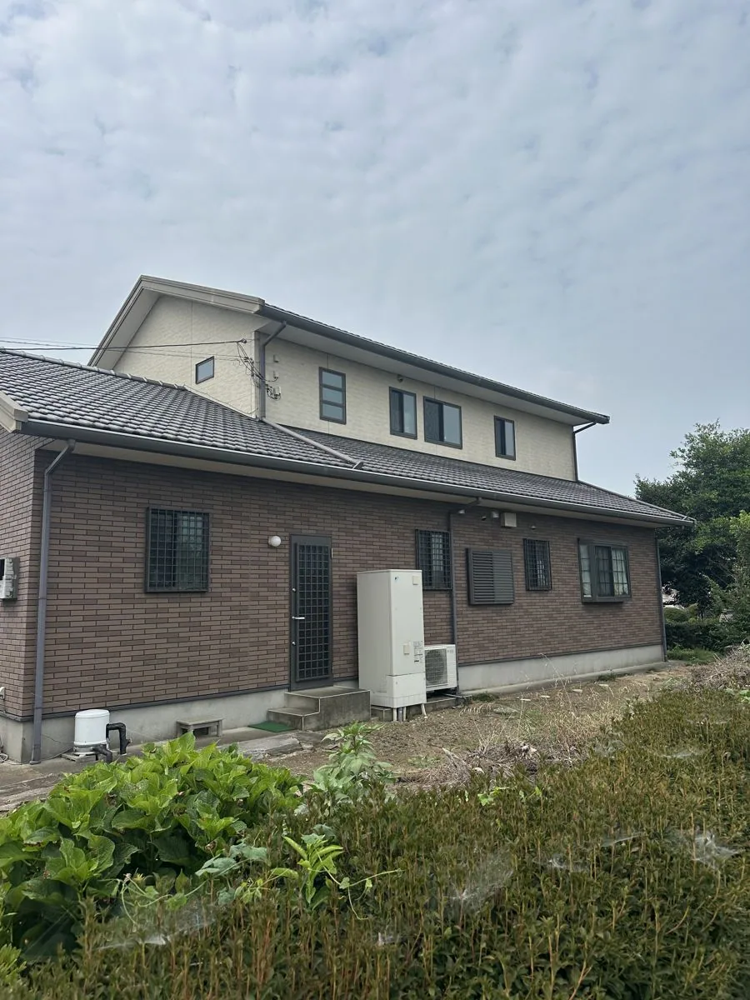
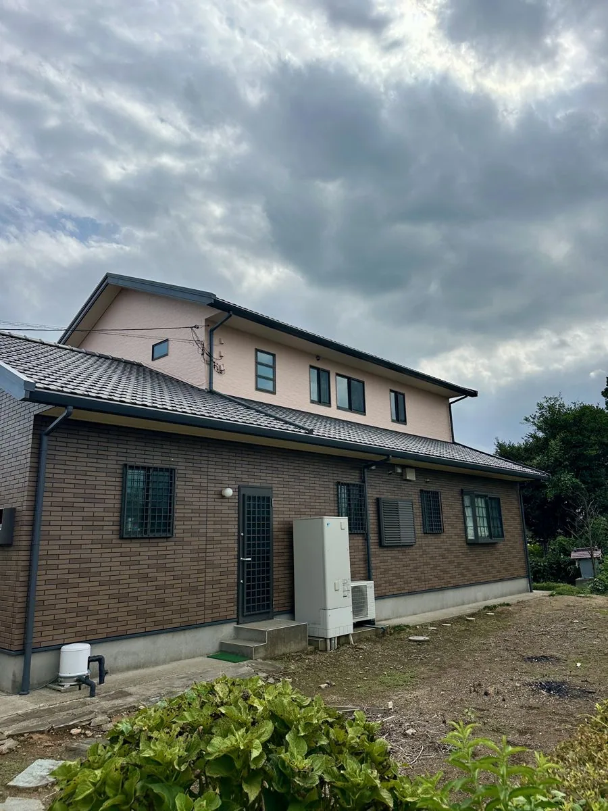

レンガの柄を消さずに、色あせだけを回復する
桶川市川田谷 K様邸 ／ 築15年・窯業系サイディング ／ 2025年7月〜8月施工

築15年、上下で外壁材が異なるお住まいです。上壁はチョーキング（触ると白い粉がつく状態）、下壁はレンガ調サイディングの色あせが進んでいました。
下壁のレンガ調は、目地も焼きムラも細かく表現された意匠性の高い外壁材です。これを普通に塗りつぶすと、柄が消えてただの一色の壁になってしまいます。そこでクリヤー（透明）塗装をご提案しました。色を乗せずに保護膜だけをつくる工法で、柄をそのまま残せます。
上壁はチョーキングが出ていたため塗り替え。下壁のレンガのトーンに合わせてピンクベージュを選んでいます。破風と雨樋はダークグレーで引き締めました。屋根は和瓦のため塗装は行っていません。
| 所在地 | 埼玉県桶川市川田谷 |
|---|---|
| 築年数 | 築15年 |
| 外壁材 | 窯業系サイディング（上壁：意匠面／下壁：レンガ調） |
| 屋根材 | 和瓦（塗装なし） |
| 工事内容 | 外壁塗装・付帯部塗装（屋根・防水は施工なし） |
| 使用塗料 | 上壁：日本ペイント パーフェクトトップ 下壁：ロックペイント クリスタルUVガードクリヤー 付帯部：日本ペイント ファインSi |
| 使用色 | 上壁：ピンクベージュ 付帯部：ダークグレー |
| 費用 | 130〜150万円（税込） |
| 工期 | 約1ヶ月 |
| 施工時期 | 2025年7月 〜 8月 |


この現場の要点が1枚で分かるカットです。上は塗り替え、下はクリヤー。下壁は柄が完全に残ったまま、色が深く戻り、目地がくっきり出ています。


上壁は下壁のレンガのトーンに合わせてピンクベージュで塗り替え、下壁はクリヤー塗装で柄を残しています。


上下で外壁材が異なるため、それぞれの状態と素材に合わせて塗料・施工方法を分けています。


破風と雨樋はダークグレーで仕上げ、上下の外壁を引き締めています。
上壁のチョーキングと、下壁の経年劣化による色あせが気になっていて、塗り替えを考えていました。相談したときに親身に話を聞いてくれたこと、工事中もこまめに報告をくれたことで、安心してお任せできました。
チョーキングが出ている外壁に透明の塗料を塗っても、粉の上に塗ることになるため密着せず、かえって寿命を縮めます。クリヤー塗装ができるのは、状態が良いうちだけです。この現場は下壁のコンディションが良かったため選べた仕様でした。意匠性の高い外壁材のお宅は、劣化が進む前にご相談ください。
同じ建物でも、上と下で外壁材が違えば最適な工法も違います。全部を同じ塗料で塗るほうが手間はかかりませんが、それでは下壁の良さが消えてしまいます。この現場では上下で塗料もメーカーも変えています。
「今の外観が気に入っているから変えたくない」という方も、「せっかくなら少し印象を変えたい」という方も、上下で仕様を分ければ両立できます。この現場では、下壁の柄を残しながら、上壁の色だけを変えました。
A. 状態によっては残せます。この事例では下壁にクリヤー塗装を行い、レンガ調の柄を残しながら色の深みと艶を整えました。
柄を残せるかどうかは、外壁の状態次第です。判断のためにも、まずは今の状態を見せてください。写真を送っていただくだけでも構いません。